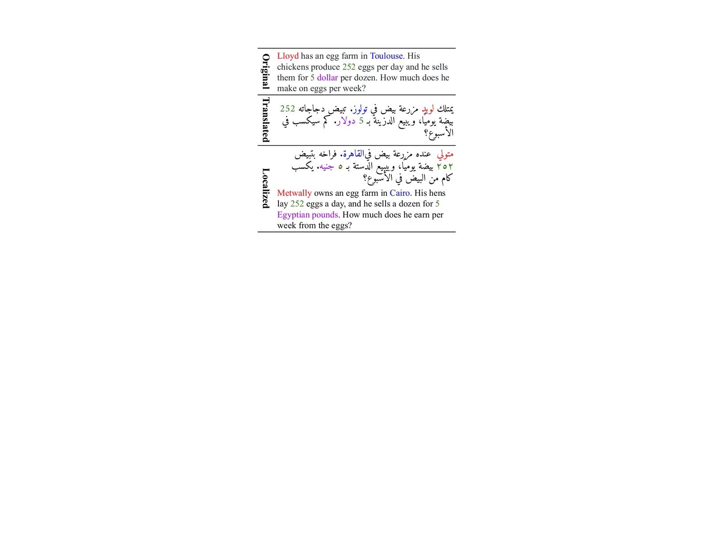
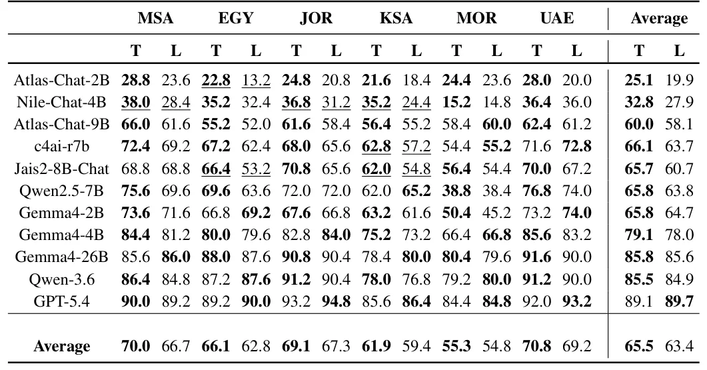
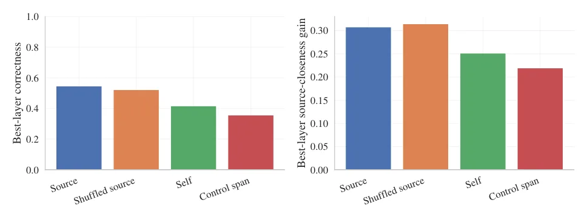

O Desafio da Diglossia Árabe em Benchmarks de LLMs
Grandes modelos de linguagem (LLMs) demonstraram desempenho robusto em tarefas complexas de raciocínio matemático em idiomas ricos em recursos, como inglês e francês. No entanto, essa capacidade não se estende consistentemente para idiomas de baixo recurso ou aqueles com múltiplas variantes dialetais. O árabe é um exemplo proeminente: apesar de sua rica diversidade dialetal, a maioria dos benchmarks existentes foca apenas no Árabe Padrão Moderno (MSA).
Essa concentração no MSA é compreensível, pois livros didáticos e materiais educacionais no mundo árabe são escritos nessa norma. Contudo, na prática educacional, os professores utilizam extensivamente dialetos árabes (DA) para instrução. Estudos documentam o uso extensivo do dialeto em aulas de ciências e matemática para explicar conceitos, enquanto o MSA permanece nos livros. Essa natureza diglótica do árabe representa um desafio crítico para a avaliação de LLMs.
Benchmarks que focam apenas no MSA fornecem apenas uma visão parcial das capacidades de raciocínio matemático em árabe. Para preencher essa lacuna, os autores do paper DAR-MGSM (Dialectal Arabic Multilingual Grade School Math Benchmark) desenvolveram um benchmark que reflete as condições reais da sala de aula no mundo árabe. O objetivo é investigar os vieses dos LLMs entre o MSA e as variedades dialetais do árabe.
Introduzindo o DAR-MGSM: Tradução vs. Localização Cultural
O DAR-MGSM é o primeiro benchmark manualmente curado para avaliar o raciocínio matemático de nível escolar em MSA e cinco grandes variedades dialetais: Egípcio (EGY), Emiradense (UAE), Jordaniano (JOR), Marroquino (MOR) e Saudita (KSA). O benchmark consiste em problemas matemáticos de palavras (MWPs) que exigem raciocínio em múltiplos passos.
Os autores distinguem duas dimensões ortogonais na adaptação dos problemas: tradução linguística e alinhamento de entidades culturais (localização). A tradução adapta apenas a linguagem do problema. A localização, por sua vez, adapta entidades culturalmente fundamentadas, como nomes próprios, locais, moedas e convenções numéricas.
Essa distinção permite um estudo controlado para verificar se variantes culturalmente alinhadas elicitem comportamentos diferentes nos modelos em comparação com traduções diretas. Problemas originais em inglês frequentemente usam entidades centradas nos EUA, como nomes ocidentais, localizações americanas ou moedas como dólares, o que pode tornar os textos alienígenas para usuários árabes e influenciar a interpretação natural dos problemas.

Metodologia: Construindo o Benchmark
O benchmark foi construído aproveitando benchmarks existentes, traduzindo MWPs do inglês para o árabe. Os autores criaram duas versões paralelas: uma de tradução apenas e outra traduzida e culturalmente localizada. A versão localizada adapta entidades e referências para variedades regionais específicas.
Por exemplo, nomes como 'Mary' podem ser substituídos por 'Fatema', e moedas como 'dólares' por 'jardens egípcios' ou 'dirhams'. A localização aplica-se apenas a problemas que contêm entidades relevantes, permitindo comparações específicas para cada categoria de localização. Isso garante que a análise seja precisa e não generalizada demais.
O DAR-MGSM permite investigar não apenas a precisão agregada, mas também como a localização afeta o processo de raciocínio interno dos modelos. Os autores avaliaram onze modelos focados em árabe e multilingues, incluindo modelos de pequeno e grande porte, para medir a sensibilidade à localização.
Resultados: A Fragilidade Exposta pela Localização
Os resultados gerais mostram que a precisão dos modelos árabes e multilingues diminui quando entidades localizadas são introduzidas. Essa degradação pode variar dependendo do tamanho do modelo e do dialeto. A substituição individual de entidades mostra apenas pequenas mudanças em comparação com todas as substituições, mas o efeito cumulativo é significativo.
Embora a maioria dos modelos performe pior nos dados localizados, modelos de ponta como GPT-5.4 e Gemma-4 mostram apenas uma leve degradação. Observa-se que o desempenho melhora à medida que o tamanho do modelo aumenta. No entanto, a queda de precisão é consistente para todas as variedades árabes, revelando que a adição de localizações impacta a capacidade do modelo de responder corretamente aos MWPs.
Certos dialetos são mais vulneráveis. Os resultados revelam um desempenho consistentemente abaixo da média para os MWPs marroquinos, tanto na tradução quanto na localização. As maiores quedas de precisão entre a tradução apenas e a localização ocorrem para o MSA e o egípcio, com uma queda de 3,3 pontos cada. Isso indica que a localização pode introduzir desafios específicos para certos dialetos.

Significância Estatística e Sensibilidade dos Modelos
A significância estatística varia entre os diferentes modelos. Para modelos de ponta de grande porte, os resultados não são estatisticamente significativos. Isso não indica invariância, pois investigações mais aprofundadas mostram que os modelos não respondem incorretamente às mesmas perguntas nas versões traduzida e localizada. Em outras palavras, os erros são diferentes, mesmo que a taxa de erro geral seja similar.
Em modelos menores, como Nile-Chat e Atlas-Chat, as diferenças entre as versões traduzida e localizada são estatisticamente significativas. Isso pode indicar que esses modelos árabes centrados são mais sensíveis às diferenças regionais. Uma possível explicação é que a localização de MWPs pode introduzir desafios adicionais para esses modelos menores, resultando em degradação do desempenho.
Os resultados não fornecem um resultado unificado: enquanto alguns modelos mostram pouca mudança ao introduzir localizações, os MWPs que os modelos conseguem responder corretamente podem diferir. Isso destaca a complexidade da avaliação, onde a precisão agregada pode mascarar mudanças fundamentais no comportamento do modelo.
Interpretabilidade Mecanística: O Que Acontece Dentro do Modelo
Os autores conduziram uma análise de interpretabilidade mecanística, focando nos modelos Gemma-4, para entender o comportamento do modelo sob localização. Essa análise revela que variantes traduzidas e localizadas do mesmo MWP frequentemente induzem trajetórias de raciocínio internas distintas, mesmo quando a acurácia agregada permanece semelhante.
A análise de patching de ativação mostrou que o patching de origem recupera parcialmente o comportamento da condição de origem em exemplos discordantes. Isso sugere que a localização altera as representações internas do modelo, afetando como ele processa e raciocina sobre o problema. As mudanças nas trajetórias internas explicam por que os modelos podem falhar em problemas específicos quando localizados, mesmo que a precisão geral não caia drasticamente.

Limitações e Escopo do Estudo
O DAR-MGSM cobre cinco dialetos árabes e o MSA, com resultados limitados a essas variedades e aos modelos avaliados. A localização cultural concentra-se em nomes, locais, moedas e convenções numéricas, não cobrindo todos os aspectos do contexto cultural. A localização aplica-se apenas a problemas que contêm entidades relevantes, o que limita as comparações para categorias individuais de localização aos subconjuntos correspondentes.
Os autores reconhecem que a localização não captura toda a complexidade do contexto cultural. Além disso, o benchmark é derivado do MGSM-Rev2, distribuído sob a licença CC BY-SA 4.0. O estudo é intencionalmente focado em apoiar a pesquisa sobre raciocínio matemático em variedades árabes e contextos culturais, sem pretender ser uma avaliação definitiva de todos os aspectos da inteligência artificial multilingue.
Implicações para o Desenvolvimento de IA Educacional
Os resultados do DAR-MGSM destacam a importância de avaliar o raciocínio matemático através de variedades linguísticas e contextos culturais. A localização geralmente reduz a precisão e pode alterar substancialmente quais problemas os modelos resolvem corretamente. Isso tem implicações diretas para o desenvolvimento de IA educacional que funcione de forma confiável em diferentes idiomas e contextos locais.
Para melhorar o desempenho em dialetos, os desenvolvedores devem considerar não apenas a tradução, mas também a adaptação cultural. A sensibilidade dos modelos menores a variações regionais sugere que o fine-tuning ou o treinamento com dados localizados podem ser necessários para modelos de menor porte. Modelos de grande escala, como GPT-5.4 e Gemma-4, mostram maior resiliência, mas ainda apresentam degradação.
Os autores planejam expandir a cobertura do DAR-MGSM e investigar métodos para melhorar a consistência do raciocínio através de formulações de problemas equivalentes. Eles também pretendem estender essa abordagem de avaliação para outros cenários multilingues, apoiando o desenvolvimento de IA mais robusta e culturalmente consciente.
Conclusão: Além da Tradução Literal
O paper DAR-MGSM fornece uma contribuição significativa para a avaliação de LLMs em idiomas de baixo recurso com diversidade dialetal. Ao introduzir a distinção entre tradução e localização cultural, os autores revelam que a adaptação cultural é um fator crítico para o desempenho dos modelos em tarefas de raciocínio matemático.
A queda de precisão observada na versão localizada, juntamente com as mudanças nas trajetórias internas de raciocínio, demonstra que a simples tradução não é suficiente para garantir a eficácia dos LLMs em contextos educacionais árabes. A localização expõe fragilidades que são essenciais para identificar e corrigir.
Este benchmark serve como um ponto de partida para pesquisas futuras em IA multilingue, enfatizando a necessidade de considerar não apenas a língua, mas também o contexto cultural. A avaliação rigorosa de dialetos é crucial para desenvolver sistemas de IA que sejam verdadeiramente inclusivos e eficazes em todo o mundo árabe e além.
O que fica
- DAR-MGSM é o primeiro benchmark manual para raciocínio matemático em árabe, cobrindo MSA e cinco dialetos.
- Modelos de linguagem perdem precisão quando problemas são localizados culturalmente, não apenas traduzidos.
- Análises de interpretabilidade mostram que a localização altera trajetórias internas de raciocínio, mesmo com acurácia similar.
- Modelos menores são mais sensíveis a variações culturais do que modelos de grande escala como GPT-5.4 e Gemma-4.
Paper original: Benchmarking Arabic Dialects for Math Problems
Comentários
Nenhum comentário ainda. Seja o primeiro.